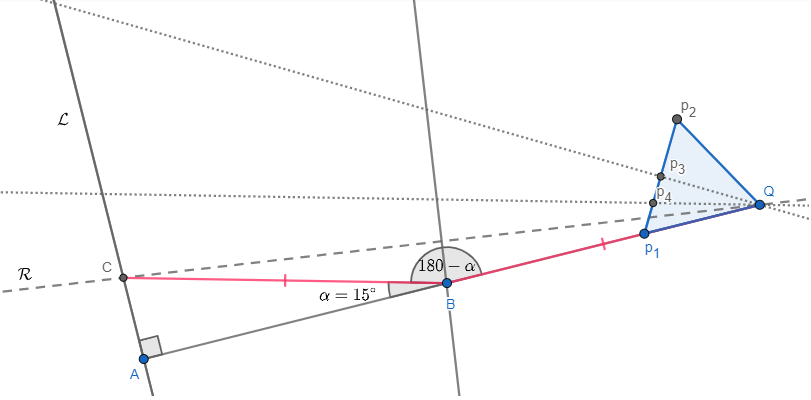

Dado un segmento \(AB\) construir un paralelogramo \(ABCD\) tal que \(\hat{A} = 60^\circ\) y \(\overline{AC} = 2\overline{AB}\), es decir, la diagonal \(\overline{AC}\)
mida el doble del lado \(\overline{AB}\).
Dibujo
Pasos de la construcción
1) Extendemos el segmento \(\overline{AB}\) a una recta \(AB\) y colocamos el punto \(p_1\) arbitrariamente sobre el segmento \(\hat{AB}\).
2) Construimos un triángulo equilátero \(\Delta Ap_1p_2\) para así armar un ángulo de \(60^\circ\). Trazamos la recta \(Ap_1\).
3) Ahora vamos a construir una circunferencia de centro \(B\) y radio \(\overline{AB}\). Marcamos la intersección \(p_3\) de esta circunferencia
con la recta \(AB\).
4) Ahora trazamos una circunferencia \(\mathcal{C}_1\) de radio \(2\overline{AB}\) con centro en A, simplemente
trazamos la circunferencia con centro en \(A\) de radio \(\overline{Ap_3}\)
5) Trazamos la paralela a la recta \(Ap_1\) que pasa por el punto \(B\). La intersección de esta paralela con la circunferencia \(\mathcal{C}_1\)
es \(C\). Para completar el paralelogramo simplemente trazamos la paralela a \(\overline{AB}\) que pasa por \(C\) y marcamos \(D\) como la intersección
entre esta paralela y la recta \(Ap_1\)
Justificación
El ángulo \(\hat{A}\) mide \(60^\circ\) por construcción, ya que \(\hat{A} = p_1\hat{A}p_2 = D\hat{A}B = 60^\circ\) (podemos reemplazar \(p_1\) y \(p_2\) por \(D\) y \(B\)
respectivamente porque están sobre la misma recta).
Por otro lado, \(\overline{AC} = 2\overline{AB}\) pues la circunferencia \(\mathcal{C}_1\) tiene radio \(2\overline{AB}\) y \(C\) yace sobre \(\mathcal{C}_1\).
Por último es un paralelogramo pues sus lados opuestos fueron construidos de manera que sean paralelos.
Problema 2
Dado un triángulo \(\Delta ABC\), un punto \(A'\) tal que \(CB\) sea un eje de reflexión y \(\Delta A'BC\) sea congruente a \(\Delta ABC\). (En palabras llanas, \(\Delta ABC\) y \(\Delta A'BC\) tiene que ser una "misma figura" espejada respecto de \(CB\)).
Dibujo
Pasos de la construcción
1) Trazamos la perpendicular a \(CB\) por \(A\). Llamemos \(\mathcal{L}\) a esta recta. A la intersección entre \(\mathcal{L}\) y \(CB\) la llamamos \(D\). (Cuestión aparte, \(\overline{AD}\) es la altura de \(\Delta ABC\) por \(A\))
2) Trazamos la circunferencia de centro \(C\) y radio \(\overline{AB}\). La intersección entre \(\mathcal{L}\) y circunferencia la llamamos \(A'\).
Justificación
Tenemos que ver que \(\Delta ABC\) y \(\Delta A'BC\) son congruentes. Primero que nada veamos que \(A\hat{B}D = A'\hat{B}D\). El triángulo \(\Delta ABA'\) es isósceles tal que \(\overline{AB} = \overline{A'B}\)
ya que \(\overline{AB}\) y \(\overline{A'B}\) son radios de una misma circunferencia. Por lo tanto, \(B\hat{A}D = B\hat{A'}D\). Por construcción, \(A\) y \(A'\) están
en la recta perpendicular a \(\overline{BD}\) y por lo tanto \(A\hat{D}B = A'\hat{D}B = 90^\circ\). De esta manera, como dos ángulos distintos de los triángulos \(\Delta BAD\) y \(\Delta BA'D\) son iguales, resulta que los tres ángulos son iguales.
Esto muestra que \(A\hat{B}C = 180^\circ - A\hat{B}D = 180^\circ - A'\hat{B}D = A'\hat{B}C\).
Ahora, usamos el criterio LAL para mostrar que \(\Delta ABC = \Delta A'BC\). Tenemos que \(\overline{BC}\) es lado compartido, \(\overline{AB} = \overline{A'B}\)
como ya dijimos y además \(A\hat{B}C = A'\hat{B}C\). Por lo tanto concluimos.
Problema 3
Dado un segmento \(AB\) construir un triángulo \(\Delta ABC\) tal que \(\hat{A} = 30^\circ\) y \(\overline{AC} + \overline{BC} = 4\overline{AB}\)
Dibujo
Pasos de la construcción
1) Elegimos un punto arbitrario \(p_1\) sobre el segmento \(\overline{AB}\) y construimos un triángulo equilátero \(\Delta Ap_1p_2\) sobre \(\overline{AB}\) de manera tal que formamos un ángulo de \(60^\circ\).
2) Trazamos la bisectriz del angulo \(p_1\hat{A}p_2\) y obtenemos un ángulo de \(30^\circ\). Llamemos \(\mathcal{L}\) a la bisectriz.
3) Trazamos la circunferencia con centro en \(A\) y radio \(\overline{AB}\). Llamemos \(A_1\) a la intersección entre esta circunferencia y \(\mathcal{L}\).
Trazamos la circunferencia con centro en \(A_1\) y radio \(\overline{AB}\). Llamemos \(A_2\) a la intersección entre esta circunferencia y \(\mathcal{L}\).
Repetimos este mismo procedimiento 2 veces mas hasta marcar \(A_4\), es decir \(\overline{AA_4} = 4\overline{AB}\)
4) Ahora trazamos la recta auxiliar \(BA_4\) y trazamos la mediatriz \(\mathcal{M}\) de esta. La intersección de \(\mathcal{M}\) y \(\mathcal{L}\) es el punto \(C\) buscado.
Justificación
Es claro por construcción que \(B\hat{A}C = p_1\hat{A}A_4 = 30^\circ\) (podemos cambiar \(B\) y \(C\) por \(p_1\) y \(C\) respectivamente pues estan sobre las mismas rectas).
Además, por construcción \(\overline{AA_4} = 4\overline{AB}\), con lo cual queremos ver que \(\overline{AA_4} = \overline{AC} + \overline{BC}\).
Sabemos que \(\overline{AA_4} = \overline{AC} + \overline{CA_4}\), pero notemos que como \(C\) está la mediatriz de \(BA_4\), tenemos que \(\overline{BC} = \overline{CA_4}\).
Con lo cual \(\overline{AA_4} = \overline{AC} + \underbrace{\overline{CA_4}}_{=\overline{BC}} = \overline{AC} + \overline{BC}\) como queriamos ver.
Problema 4
Sea segmento \(\overline{AQ}\) un segmento dado.
Sabemos que \(\overline{AQ}\) es la suma de la hipotenusa y un cateto de un triángulo rectángulo \(\Delta ABC\) en \(A\).
Además nos dicen que el ángulo \( \hat{B} = 15^\circ\). Construir el triángulo rectángulo \(\Delta ABC\).
Análisis previo
Supongamos que resolvimos el problema como en la figura:
Notemos que \( \Delta BCQ\) necesitamos que sea isósceles, pero además sabemos que \(C\hat{B}Q = 180^\circ - \alpha\).
Por lo tanto, \( B\hat{C}Q = B\hat{Q}C = \alpha/2 \) con lo cual lo que nos estaría diciendo esto es que tenemos que construir un
angulo de \(\alpha/2\) sobre \(Q\).
Entonces, recapitulando. Trazamos la perpendicular a \(\overline{AQ}\) sobre \(A\) y la llamamos \(\mathcal{L}\). Sobre \(Q\) armamos un ángulo que mida la mitad de \(15^\circ \), es decir, armamos \(15^\circ\) y trazamos la bisectriz. A esta bisectriz la llamamos \(\mathcal{B} \). A la intersección entre \(\mathcal{L}\) y \(\mathcal{B}\) la llamamos \(C\). Ahora, trazamos la mediatriz de \(\overline{CQ} \). A la intersección de la mediatriz con \( \overline{AQ} \) la llamamos \(B\).
Este es el triángulo deseado, ya que la mediatriz hace que \(\overline{CB} = \overline{BQ} \) y además \(\hat{A} = 15^\circ\) pues \(C\hat{B}Q = 180^\circ - 15^\circ \).
Dibujo

Problema 5
Sea segmento \(\overline{AD}\) un segmento dado que será la altura \(h_A\) de un triángulo \(\Delta ABC\) a construir.
Construir \(\Delta ABC\) isóceles \(\overline{AB} = \overline{BC}\) de la altura indicada y tal que \( \hat{B} = 105^\circ\).